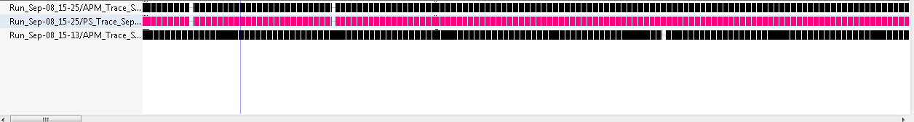

Time Chart View
The Time Chart view allows the user to visualize every open trace in a common time chart. Each trace is displayed in its own row and ticks are displayed for every punctual event. As the user zooms using the mouse wheel or by right-clicking and dragging in the time scale, more detailed event data is computed from the traces.

Time synchronization is enabled between the time chart view and other trace viewers such as the events table.
Color settings defined in the Colors view can be used to change the tick color of events displayed in the Time Chart view.
When a search is applied in the events table, the ticks corresponding to matching events in the Time Chart view are decorated with a marker below the tick.
When a bookmark is applied in the events table, the ticks corresponding to the bookmarked event in the Time Chart view is decorated with a bookmark above the tick.
When a filter is applied in the events table, the non-matching ticks are removed from the Time Chart view.
The Time Chart view only supports traces that are opened in an editor. The use of an editor is specified in the plug-in extension for that trace type, or is enabled by default for custom traces.